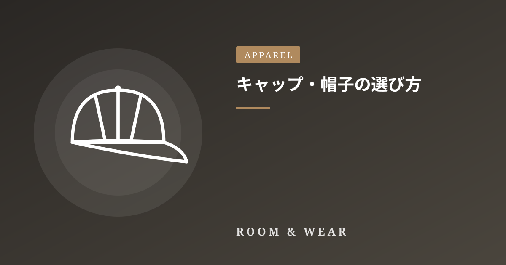

キャップ・帽子の選び方。似合う形とサイズの合わせ方

※この記事にはアフィリエイトリンクが含まれています（広告について）。
帽子は1つ取り入れるだけで、シンプルな服装に変化をつけられるアイテムです。ただ「似合わない気がする」と苦手意識を持つ人も多いもの。形とサイズのポイントを押さえれば、ぐっと取り入れやすくなります。
キャップの形の種類
6パネルキャップ（ローキャップ）
浅めでツバが曲がった、最も定番の形。頭になじみやすく、カジュアルな服装に合わせやすいのが特徴です。
ベースボールキャップ（ディープ）
深めにかぶれる形。顔まわりにボリュームが出るので、頭の大きさが気になる人にも合わせやすいです。
ニット帽
秋冬の定番。折り返して浅めにかぶるとすっきり、深めにかぶるとカジュアルな印象になります。
サイズの測り方
眉の少し上と、後頭部の一番出ている部分を通るようにメジャーで一周測ります。この長さが帽子のサイズの目安です。アジャスター付きのキャップなら、多少のサイズ差は調整できます。
似合わせるコツ
- 深さを調整する：浅くかぶるとカジュアル、深くかぶると落ち着いた印象に
- 前髪を少し出す：おでこを全部隠すより、少し髪を出した方が自然に見える
- 色は服と合わせる：黒・ネイビー・ベージュなど、服に使っている色から選ぶとまとまりやすい
まとめ
1つ目は、ロゴが控えめな黒かネイビーのローキャップがおすすめ。サイズを測ってから選べば、通販でも失敗しにくくなります。
この記事に関連するアイテムを探す
Amazonの検索結果ページに移動します。条件に合う商品を比較してお選びください。
- 無地のローキャップAmazonで商品を探す
- ニット帽Amazonで商品を探す
価格・在庫・仕様は変わることがあります。購入前にAmazonの商品ページで最新の情報をご確認ください。